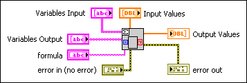
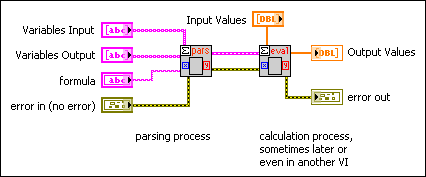

A Formula Parsing VI scans an input string and interprets this string as a formula, or a collection of formulas. Then, the Formula Parsing VI transforms the formulas into numeric calculations and outputs the results. The Formula Parsing VI routines deal only with real numbers.
The following are three main kinds of formula routines:
The first two categories of Formula Parsing VIs can be further divided into two subcategories, the direct form and the indirect form. As an example, the direct version of the Eval Formula Node VI is represented by the following block diagram.

On the other hand, the indirect form splits evaluation explicitly into parsing and evaluation steps. The following illustration shows a simple example. You can use the indirect form in larger applications where the efficiency of this two-step process, parsing and then evaluating, outweighs the additional complexity and logic.

There are differences in the behavior of the parser if you are using Mathematics VIs or the Formula Node. Refer to Formula Node and Expression Node Functions for functions you can use with Formula Parsing VIs.